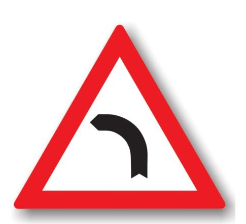
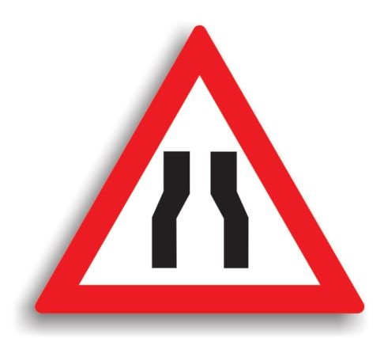
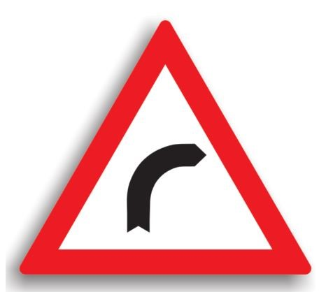
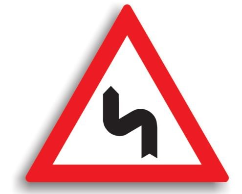
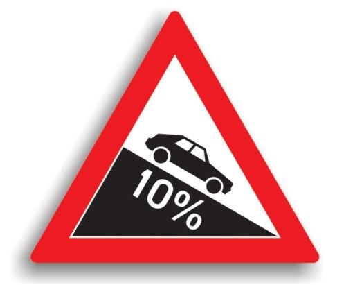
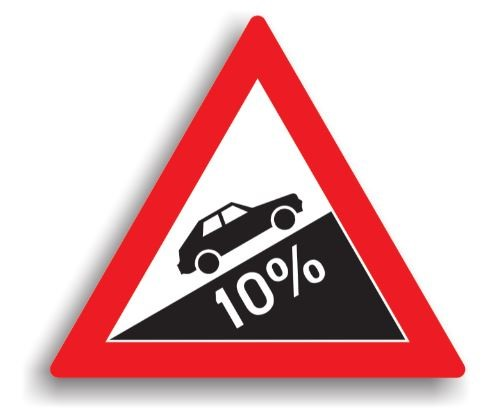

Indicatoare rutiere de avertizare

Curbă la stânga
Este amplasat la cel mult 200 m de o curba la stanga. Conducatorul
trebuie sa circule cu viteza redusa in curbe, iar daca vizibilitatea este redusa sub 50 m.,
toate manevrele (depasirea, oprirea, stationarea, mersul inapoi, intoarcerea) sunt interzise.

Drum ingustat pe ambele parti
Se amplaseaza la 100-200 m de locul in care sectorul de drum incepe
sa se ingusteze pe ambele parti cu cel putin jumatate de metru. La intalnirea acestui indicator,
conducatorul auto poate preventiv sa reduca viteza, iar manevrele de oprire, stationare, mersul
inapoi si intoarcerea sunt interzise. Depasirea este permisa.

Curbă la dreapta
Este amplasat la cel mult 200 m de o curba la dreapta. Conducatorul
trebuie sa circule cu viteza redusa in curbe, iar daca vizibilitatea este redusa sub 50 m.,
toate manevrele (depasirea, oprirea, stationarea, mersul inapoi, intoarcerea) sunt interzise.
Este permisa depasirea in curbele cu vizibilitate.

Curbă dublă
Se instaleaza atunci cand urmeaza o succesiune de curbe, daca
distanta dintre acestea e mai mica de 250 m. Se amplaseaza la 100-200 m inaintea primei curbe.
Aceste indicatoare pot fi insotite si de panouri aditionale, pe care este specificata distanta
pana la terminarea sectorului de drum periculos, daca lungimea acestuia depaseste 1000 m.
Conducatorul trebuie sa circule cu viteza redusa in curbe, iar daca vizibilitatea este redusa
sub 50 m., toate manevrele (depasirea, oprirea, stationarea, mersul inapoi, intoarcerea) sunt
interzise.

Coborâre periculoasa
Se amplaseaza la 100-200 m de inceputul sectorului de drum, cand
panta depaseste 7%. Conducatorul auto nu este obligat sa reduca viteza, dar nu are voie sa
stationeze pe toata lungimea pantei. Daca, in varful pantei, vizibilitatea este redusa sub 50 m,
toate manevrele sunt interzise. Daca drumul nu este suficient de lat pentru a permite trecerea a
doua vehicule unul pe langa celalalt, are prioritate cel care urca fata de cel care coboara.

Urcare cu înclinare mare
Se instaleaza la 100-200 m de inceputul sectorului de drum, cand
panta depaseste 7%. Conducatorul auto nu este obligat sa reduca viteza, dar toate manevrele sunt
interzise. Daca drumul nu este suficient de lat pentru a permite trecerea a doua vehicule unul
pe langa celalalt, avand prioritate cel care urca fata de cel care coboara.